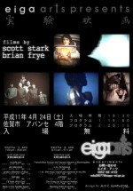
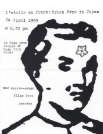

presents
films by
|  |  |
Scott Stark and Brian Frye
April 24th, 6.30pm, Avanse 4F, Saga City, Japan
Scott Stark programme 7.00-8.15pm
SCOTT STARK'S films have shown locally (San Fransisco), nationally and internationally, including recent one person shows at New York's Museum of Modern Art (MOMA) and the Austria Filmmaker's Cooperative in Vienna. His films, I'll Walk With God and Acceleration both won recent Director's Choice first place awards at the Black Maria Film Festival. He has taught art classes at the San Fransisco Art Institute (where he received his MFA), interveaving non-traditional uses of films and videos with a variety of art disciplines. Stark served for seven years on the board of the San Fransisco Cinematheque during which time, among other things, he co-counded the Cinematheque's journal of film and media art, Cinematograph.
Scott has produced more than 50 films and videos in the last 18 years. Additionally, he has created a number of gallery and non gallery installations using film and video, and created elaborate photographic collages using large grids of images. Born and educated in the mid-west, he has always been interested in aggressively pushing his work beyond the threshold of traditional viewing expectations, challenging the audience to question its relationship to the cinematic process; yet he also tries to build into the work elements of whimsy and incongruity that allow the viewer an entryway into the work while maintaining a critical distance. Both a passionate purist and a cynical skeptic, he likes to emphasise the physicality of film while humorously cross-referencing it to the world outside the theater, attempting to lay bare the paradoxes of modern culture and the magical nature of the perceptual experience.
in.side.out (1999, videotape, colour, sound, 10mins)
"in.side.out is a very personal piece. On the surface it's about the changes taking place, over a two year period, in an empty lot and a decrepit old building next to my house. Deeper down it's about the walls and windows between my interior and exterior selves, and how the fragile constructs of identity are etched, eroded, re-shaped and transformed by outside forces."(SS)
Acceleration (1993, Super-8mm, colour, sound, 10mins)
"A snapshot taken in a moment of human evolution, where souls of the living are reflected in the windows of passing trains. The camera captures the reflections of passengers in the train windows as the trains enter and leave the station, and the movement creates a stoboscopic flickering effect that magically exploits the pure sensuality of the moving image." (SS)
First Prize (Director's Choice), Black Maria Film Fetival, 1994
Under A Blanket of Blue
(1996, Super-8mm, colour, sound, 15mins. Video presentation)
"A super-8 alchemy of song and imposing urban landscapes. Filmed in heavily over-developed areas of northern and central Spain, the dehumanizing and impersonal architectural structures that the inhabitants call Îhome' are edited into a bittersweet array of rigid geometric forms and bland textures. Ironically grafted onto the imagery is Glenn Miller's sweet romantic ballad, ÎUnder A Blanket of Blue,' both in original recording and in a breathless vocal a capella by the maker during the filming." (SS)
Don't Even Think (1992, Super-8, colour, sound, 15mins).
"Tongues flapping, lips smacking, teeth clacking, vocal chords vibrating; it sounds like speech, but it's in a language where intellect and vocabulary impede comprehension. To really hear what's being said, don't talk; don't even think."
Satrapy (1988, 16mm, colour, sound, 13mins)
Part of The Chromesthetic Response Series (4 films) in which 16mm film was shot in a 35mm still camera producing a flickering, collage-like effect. Because the images spill over onto the optical soundtrack area of the film, the variations in image density actually generate their own peculiar sounds.
Satrapy is composed of rephotographed pornographic playing cards which rhythmically intrude upon a piercing 5-beat score of different-sized black lines, injecting a note of Înegative sound' every third beat against the 5-beat background. As the film progresses, contrapuntal variations of 3, 4, 5 and 7 beat rhythms blend and collide, creating an almost indiscernible complexity, until the lined background ruptures and the sounds and visuals become scattered and disordered. The Îgirlie' cards break out onto saturated colour fields and eventually find their way into the real world, aggressively flickering by against backgrounds of earth, concrete and other surfaces.(SS)
Honourable mention, Oberhausen Film Festival, 1989
I'll Walk With God (1994, 16mm, colour, sound, 8mins)
"Using emergency information cards surreptitiously lifted from the backs of airline seats, I'll Walk With God pictorially charts an airline flight attendant's stoic transcendance through and beyond worldly adversity. Through an elaborate system of posturing and nuance that evokes an almost ritualistic synergy, the female protagonist(s) are shuttled toward a higher spiritual plane, carried aloft on the shimmering wings of Mario Lanza's soaring tremolo."(SS)
First Prize (Director's Choice), Black Maria Film Festival, 1995
Back In The Saddle Again (1997, 16mm, B/W, sound, 10mins)
"A found footage film that innocently plays with many of the elements I explore in my own work. A family's playful interaction with a 16mm movie camera, singing along as a group with Gene Autrey's title song in front of the camera, combines western fantasy, American kitsch, gender posturing, deterioration of the film's surface, the wonderment of the cinematic process, and the use of controlled accidents to shape the form of the film. My only intrusion on the footage was to print it first in negative, which adds a bleak, mysterious edge to it, and to print it again in positive, which seems to answer many of the questions raised in the first part." (SS)
BRIAN FRYE
BRIAN FRYE is the 24 year old founder of The Robert Beck Memorial Cinema in NYC, currently one of the best venues for avant-garde film on the East Coast. His own work has been described as "a notch above formal experimentation, Frye's films present cognitive conundrums that draw from the toy-box of historical avant-garde filmmaking." (NY Press)
He has had one person shows at Anthology Film Archives in NYC (the theatre of the reknown NY Filmmaker's Cooperative) and at The Chicago Filmmakers Cinematheque.
"His found footage films are beautifully crafted works that delve into our social and political past with a subtle, satirical wit. At the same time they are thoughtful meditations on the nature of the film medium itself. Frye's films often contain a performative aspect. He combines tableaux of minimal action with visual styles sometimes reminiscient of German Expressionist film, sometimes of the sparse look of early Andy Warhol films. His films have a neo-Dada quality, full of visual jokes and surprises." (Chicago Filmmakers)
"Some of the most original work I've seen recently from a new filmmaker. Redefining the relationship between the spectator and the film, his somewhat hermetic works--mostly silent, all in black and white, and varying from two minutes to about half an hour--don't offer any of the usual moviegoing pleasures: not only are there no plots, but Frye's images are neither entertaining nor seductive, nor is his editing particularly rhythmic or immediately satisfying. Instead his unassuming, almost offhanded work points toward an intellectual cinema that questions the way we see and know the world....Frye is one of a few filmmakers...to make films that meditate on their limitations rather than celebrate and exploit cinema's power." (Fred Camper, Chicago Reader). For the entire review, go to http://www.chireader.com/movies/archives/1998/0998/09118b.html
Tonight's EIGA ARTS is the world premier of Francois Boue....
Brian Frye programme 8.30-9.30pm
Francois Boue Services The Fragrance Machine At Bloomingdales (1999, 16mm, colour, 3mins)
6.95: Striptease (1995, 16mm, B/W, 3mins)
"The spectacle is a false revelation, the mechanism of substitution; it replaces knowledge with the promise of knowledge, language with the promise of communication, authenticity with the promise of truth. It is an excercise in recursive teleology, its object the reproduction of needs it cannot satisfy, the desire for alienation. It exists only as the material of consumption, the wasted husk of consciousness in presence. Its enlightenment is that of the pedagogue, a vicious obscurantism, translating the beauty of discontinuity into a simple science of empty maxims and valorized tautology. For its disciples speak its name in tongues that cannot be their own, and with the terror of the repentant suicide, they dance a fearful tarantella and scream with rabid glee the terrible praises of its own forsaken corpse." (Jackson P. Broadway)
11.95: the most important moment in my life (infinite set) (1995, 16mm, B/W, silent, 3.5mins)
"The representation of the void is always a representation which is full and which resolves itself on analysis into two positive elements; the idea, distinct or confused, of a substitution, and the feeling, experienced or imagined, of a desire or a regret." (Henry Bergson, ÎCreative Evolution')
"Of all things that are concealed and manifested, the Fire which is above the heavens is the treasure house, as it were a great Tree from which all flesh is nourished. The manifested side of the Fire is the trunk, branches, leaves, and the outside bark. All these parts of the great Tree are set on fire from the all-devouring flame of the Fire and destroyed. But the fruit of the Tree, if its imaging has been perfected and it takes shape of itself, is placed in the storehouse (or treasure), and not cast into the Fire. For the fruit is produced to be placed in the store-house, but the husk is to be committed to the Fire; that is to say, the trunk which is generated not for it's own sake but for that of the fruit." (Hippolytus-summary of MS, ÎThe Great Announcement')
untitled (1996, 16mm, B/W, 3mins)
"Records of a symbolic city in which the mark of hitoricity manifests itself despite the static continuity of alienated architecture, and the spectre of specificity blooms in the shadow of the careless machine. The true name of spaces is broken and their secret lives can be realised only in moments." (Jackson P. Broadway)
Interventions (1996-8, color/B&W, silent/sound, 15 min.)
Meeting With Khruschev (1997, 16mm, B/W, Silent, 35mins)
"How vitally will it affect the life of a modern Westerner when he learns, for example, that though the Indian peninsula was invaded and occupied by Alexander the Great and through his conquest had a capital influence on its history, India has not even remembered the great conqueror's name" (Mircea Eliade, ÎMyth and reality')
and probably more.....!!!
EIGA ARTS is at AVANSE, Don Don Don no Mori, central Saga. Next to the City Library. Donations upto 1000YEN are encouraged on the door.

{kind=link}
{kind=link}